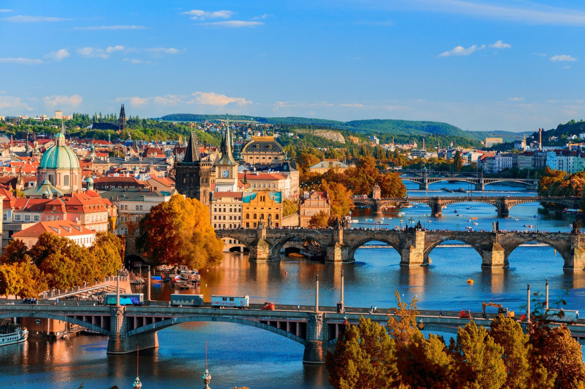
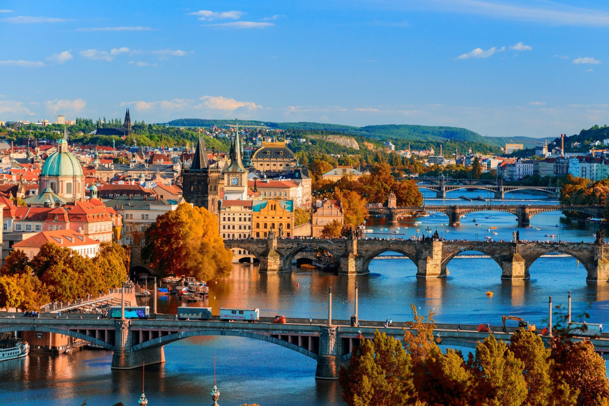
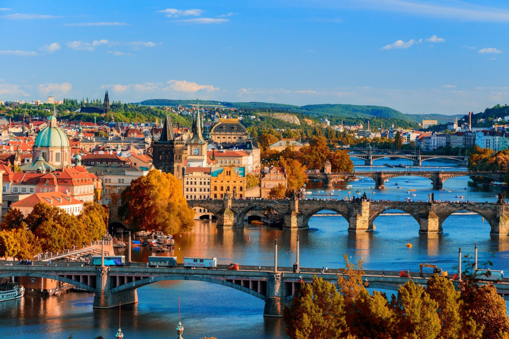
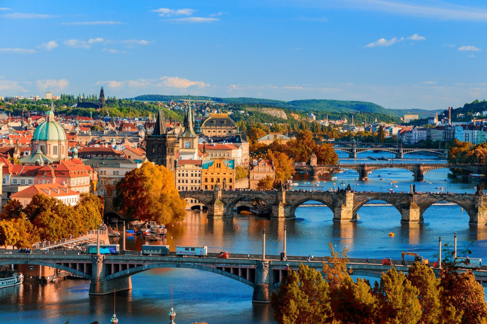

A Europa atrai milhões de turistas anualmente devido à sua rica história, diversidade cultural e extraordinária arquitetura. O continente abriga uma herança cultural vasta que remonta a séculos, com monumentos e locais históricos que testemunharam eventos cruciais. A arquitetura europeia é um reflexo dessa longa narrativa, incorporando estilos variados, desde as majestosas catedrais góticas até os palácios renascentistas e os edifícios modernos. A diversidade arquitetônica da Europa é um imã para os amantes da arte e da história, proporcionando uma experiência única ao explorar suas cidades e paisagens. Além disso, a preservação cuidadosa de muitos monumentos e centros urbanos históricos contribui para uma atmosfera autêntica e cativante. A acessibilidade, a rede eficiente de transporte e a proximidade geográfica de diferentes culturas também fazem da Europa um destino turístico popular. Viajar pelo continente oferece a oportunidade de testemunhar a evolução da arquitetura ao longo dos séculos e experimentar uma riqueza cultural que cativa e inspira visitantes de todo o mundo.